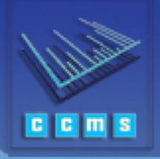

Data submission
ProteomeXchange fully supports both MS/MS proteomics and SRM data submissions. Submissions of other types of proteomics data is also possible using the Partial Submission mechanism.
PRIDE - PRoteomics IDEntifications Database
PRIDE accepts both
The GUI based PX Submission Tool can be downloaded to start data upload.For detailed information, please consult the following documents
PeptideAtlas - PASSEL
SRM/MRM data can be submitted to PASSEL.
MassIVE
Shotgun proteomics data can be submitted to MassIVE.
jPost
Data submission documentation is available at jPost Help Page.